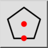

Polygon (Střed, strana)
Panel nástrojů / Ikona:


Nabídka: Kreslení > Obrazec > Polygon (Střed, strana)
Zkratka: P, G, 3
Příkazy: polygoncs | pg3
Panel nástrojů / Ikona:


Vytváří mnohoúhelníky se středem a středovým bodem jedné strany.